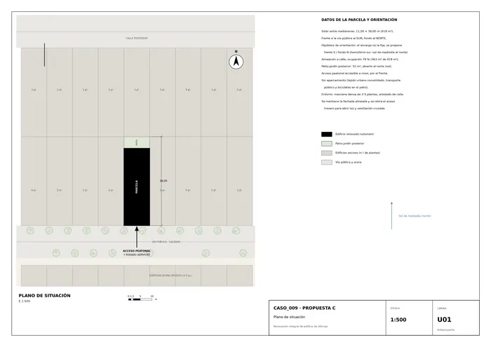
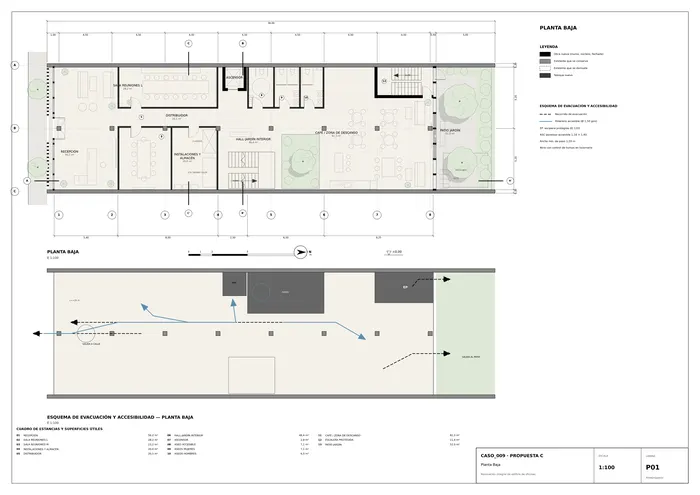
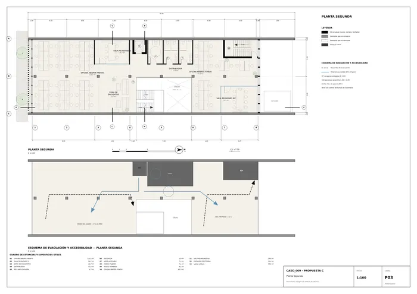
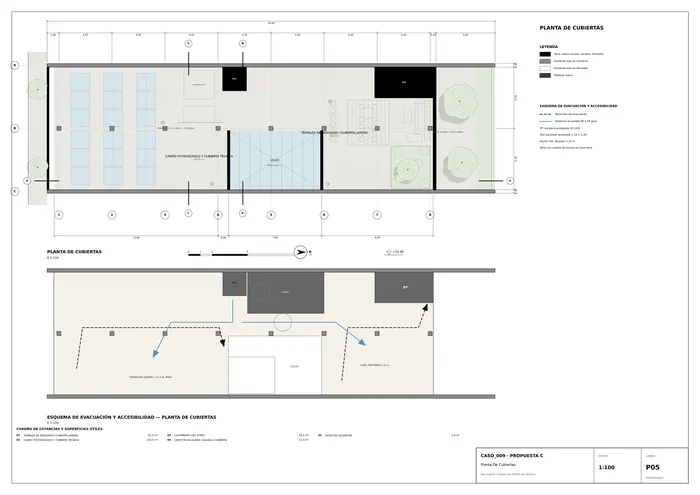
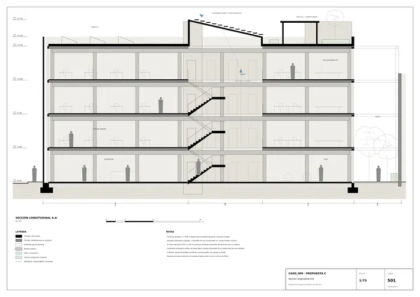
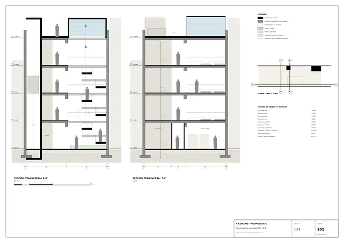
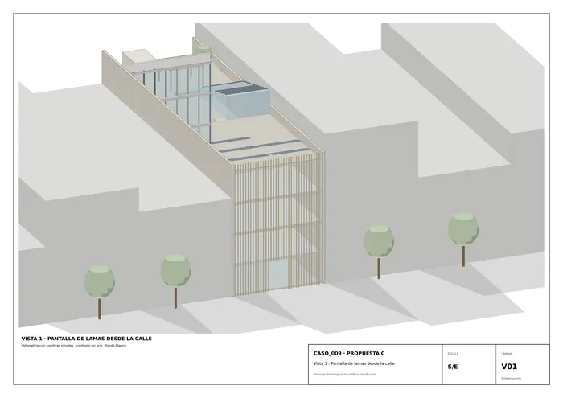
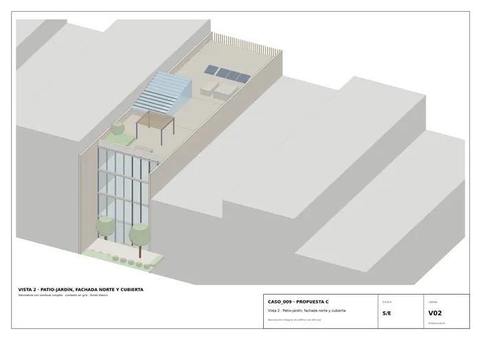
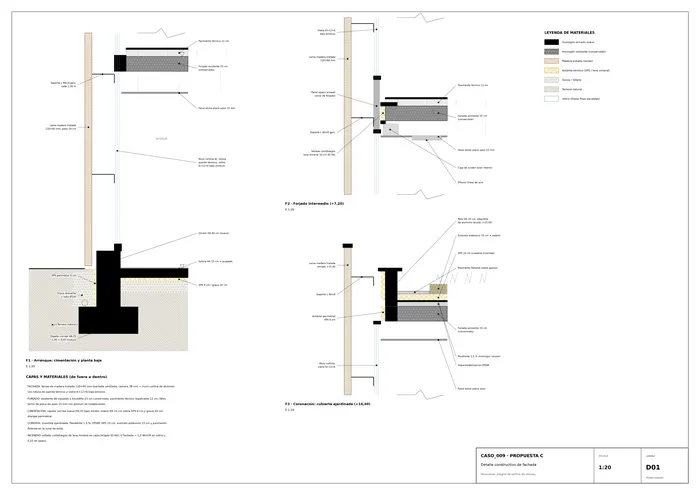

Caso 009 · Pedro Livni · 2018 · oficinas (renovación de edificio existente)
El boceto se lee como una sección: forjados horizontales, escaleras diagonales apiladas que se cruzan y una cortina densa de trazos verticales. La propuesta conserva el esqueleto del edificio (medianeras, pilares y forjados de los dos cuerpos extremos), perfora el centro con un atrio de doble altura y cuatro niveles donde la escalera es el espacio de encuentro, y reviste la fachada con una pantalla de lamas verticales de madera que dialoga con la calle. El anexo trasero se demuele y se convierte en un patio-jardín al norte. Se mejora así la luz (lucernario norte, fachada trasera acristalada), la ventilación cruzada y la relación con la calle, con el mínimo de demolición y de carbono incorporado.
Hipótesis de orientación (el encargo no la fija): frente a la calle al SUR y fondo al NORTE (hemisferio sur, sol de mediodía al norte). Se asume un edificio existente de PB+3 (4 niveles, 3,60 m entre forjados), muros medianeros portantes de ladrillo, una línea de pilares central y forjados unidireccionales de 25 cm (a verificar in situ; no hay levantamiento).
| 1. Bloque pleno con patio lateral (literal) | 2. Dos cuerpos + atrio transversal (elegido) | 3. Gradería de terrazas y medios niveles (cuestiona el prisma) | |
|---|---|---|---|
| Ocupación / piezas | Una pieza, demolición total, patio junto a medianera | Dos cuerpos conservados unidos por un vacío central; patio trasero | Cuatro cuerpos escalonados hacia el fondo |
| Núcleos / recorridos | Núcleo único al fondo | Núcleo lateral + escalera abierta en el atrio + escalera protegida al fondo | Escalera = planta, medios niveles |
| Sección | Forjados continuos | Doble altura × 4 niveles con lucernario | Gradas, terrazas a +9 y +12 |
| Luz natural / vistas | Débil en el fondo (solo patio lateral) | Luz cenital norte + fachada trasera + patio | Excelente en terrazas, profunda en gradas |
| Programa 1.000-1.600 m² | Sí, pero poco conservador | Sí (1.334 m²) | Pierde superficie útil en terrazas |
| Normativa (accesibilidad, evacuación) | Sencilla | Atrio con control de humos + escalera protegida | Itinerarios accesibles complejos (desniveles) |
| Reutilización de lo existente | Mínima | Alta (medianeras, pilares y 2/3 de forjados) | Baja |
Elijo el 2: reutiliza la estructura, resuelve luz y ventilación con una sola operación (el atrio) y mantiene la alineación y la altura permitidas. Descarto el 1 por convencional y poco luminoso en el fondo (su única ventaja, la simplicidad, no compensa la demolición total) y el 3 porque rompe el itinerario accesible y reduce superficie útil, aunque cuestionaba el prisma.
| Exigido | Propuesto | Cumple / desviación |
|---|---|---|
| Superficie construida 1.000-1.600 m² | 363 + 3 × 323,5 = 1.333,5 m² (sin casetones ni terraza) | Cumple |
| Espacios de trabajo flexibles (nº y m² a definir) | 2 oficinas por planta en P1-P3: frente 113,1 m² y fondo 62,3 m² (6 unidades, 526 m²); recepción/café como espacios complementarios | Cumple; luz natural en ambas caras |
| Salas de reuniones de distinto tamaño | L 28,2 m² (×1) · M 23,2 m² (×1) · M2 19,9 m² (×3) · S 16,7 m² (×3): 4 tipos, 8 salas | Cumple |
| Recepción/acceso accesible desde la vía pública | Recepción 56,2 m²; umbral a nivel, puerta doble 1,80 m | Cumple |
| Aseos según normativa | Por planta: accesible 7,1 m², mujeres 7,1 m², hombres 6,5 m² (4 niveles) | Cumple (dotación a verificar con aforo) |
| Zona de descanso/encuentro, exterior o vegetación | Café 82,3 m² + patio-jardín 52 m² + terraza-jardín ≈ 86 m² + zona de encuentro 13,7 m² (×3) | Cumple |
| Circulación vertical accesible (escalera + ascensor) | Ascensor 1,10×1,40 (2,9 m²) a los 5 niveles; escalera del atrio (1,30 m) y escalera protegida (1,10 m) | Cumple |
| Aparcamiento (opcional) | No se proyecta; aparcabicis en el patio | Decisión de proyecto (solar estrecho, tejido urbano) |
| Instalaciones y almacenaje | 20,0 m² en PB + cubierta técnica | Cumple |
| Acceso accesible, accesibilidad universal | Itinerario sin escalones, Ø1,50 en giros, WC accesible por planta | Cumple |
| Protección contra incendios y evacuación | Escalera protegida EI120, atrio con control de humos, recorridos ≤ 25 m | Cumple (análisis preliminar) |
| Altura/alineación a calle, ocupación elevada, luz y ventilación | Alineado, 79 % de ocupación, patio de 52 m² y atrio de 39,5 m² | Cumple |
| Mejorar relación con la calle e identidad | Pantalla de lamas verticales con portal en PB | Cumple |
| Decidir qué se conserva, demuele y añade | Ver apartado 4 | Cumple |
| Alzado | No se entrega lámina de alzado independiente; la fachada se lee en V01 y D01 | Desviación menor (el listado de entregables no la incluye) |
Lamas de madera tratada 120×60 mm (paso 24 cm) a 38 cm de un muro cortina de aluminio con rotura de puente térmico y vidrio 6+12+6 bajo emisivo; forjado existente con pavimento técnico 12 cm y falso techo de placa de yeso; sellado cortafuegos de lana mineral en cada forjado (EI 60); cubierta invertida ajardinada (pendiente 1,5 %, EPDM, XPS 10 cm, sustrato 15 cm); solera de hormigón 15 cm sobre XPS 6 cm y grava 20 cm. Colores apagados: madera natural, hormigón blanqueado y vidrio claro; vegetación en patio, atrio y terraza.
Itinerario accesible desde la calle (rasante ±0,00) hasta el ascensor (1,10×1,40) y a todas las salas; aseo accesible en cada planta; pasos ≥ 1,20 m. Evacuación: salida directa a calle y al patio en PB; en plantas altas, escalera protegida EI120 al fondo (≈ 12 m) y escalera del atrio con control de humos (≈ 17 m); recorridos máximos ≤ 25 m. Ver esquemas en las láminas P01-P05.

U01 · Plano de situación
P01 · Planta BajaP02 · Planta Primera
P03 · Planta SegundaP04 · Planta Tercera
P05 · Planta De Cubiertas
S01 · Sección longitudinal A-A'
S02 · Secciones transversales B-B' y C-C'
V01 · Vista 1 · Pantalla de lamas desde la calle
V02 · Vista 2 · Patio-jardín, fachada norte y cubierta
D01 · Detalle constructivo de fachadaMemoria de la propuesta tal como la entregó el sistema. Se han omitido las notas internas del proceso (revisiones, control de reconocimiento y referencias a archivos de trabajo).